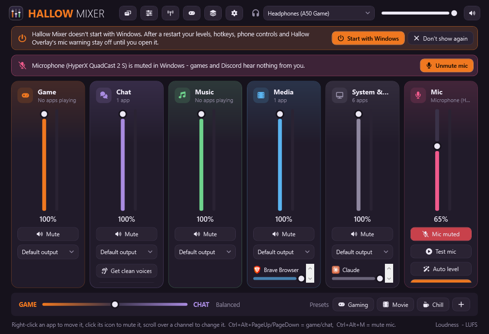
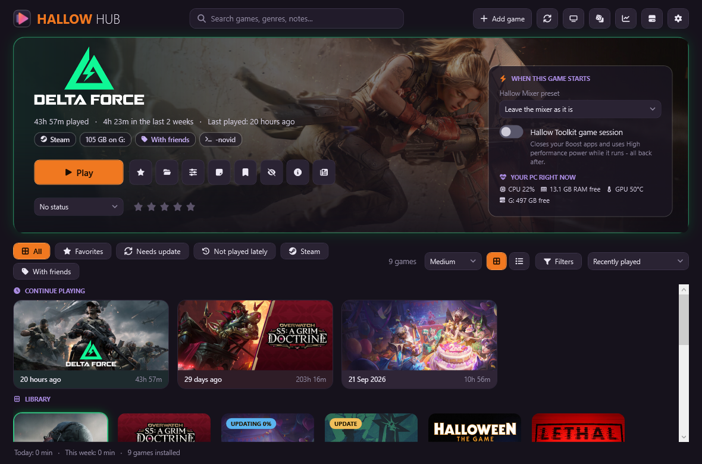
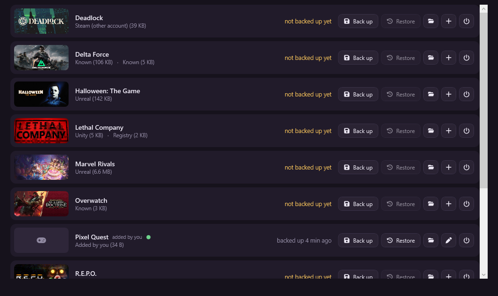
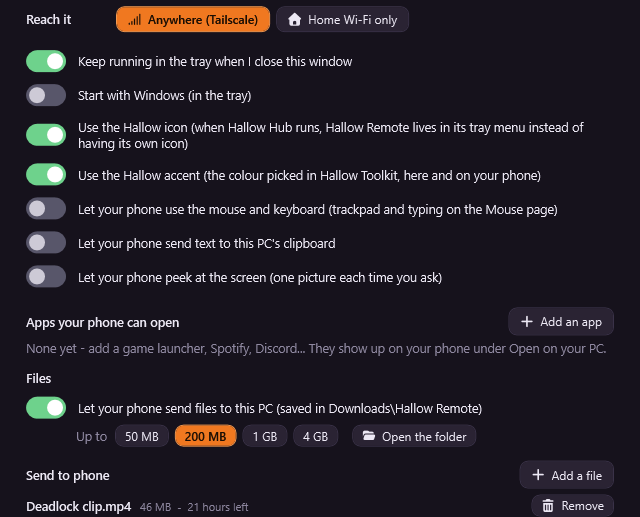
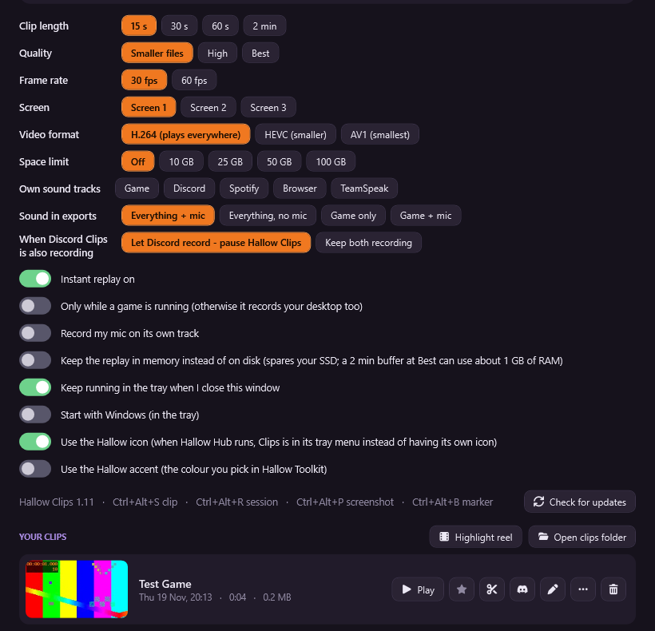
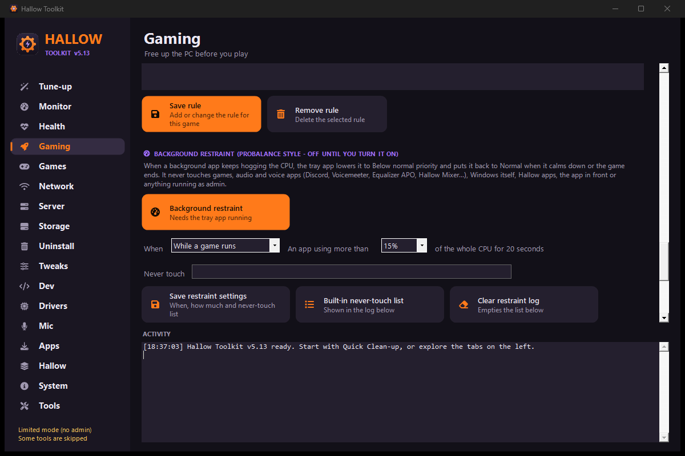
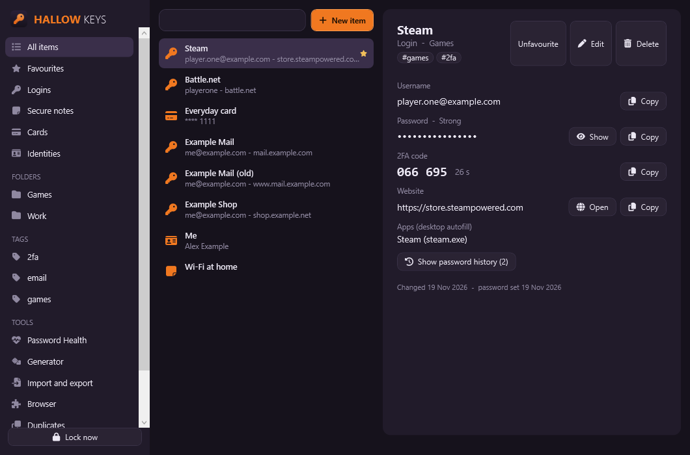

Tiny and quick
No big runtime, no account, no ads. Each app is a single small program.
Stays on your PC
No cloud, no tracking. Crash reports are kept on your PC and never sent anywhere.
Anti-cheat safe
Nothing hooks into games. The overlay and recorder use Windows' own APIs.
Updates itself
Each app checks GitHub, asks first, and verifies the download before installing.
The apps
Pick the ones you want - every app works on its own.
HALLOW MIXER
A per-app volume mixer like SteelSeries Sonar
- Game, Chat, Music and Media channels with a game/chat balance slider
- Mic tools: test, auto level, mute hotkey and a muted-mic warning
- Presets and profiles, per-app output, app rules ("always starts at 50%")
- Smart volume, loudness meter, EQ through Equalizer APO

HALLOW HUB
All your games in one launcher
- Finds your Steam, Epic and Battle.net games by itself; add anything else, emulators too
- Playtime stats, collections, play status, ratings, notes and links
- Per-game mixer presets, launch options and "close apps while I play"
- Surprise me: a random pick from your backlog. Big Picture mode for the couch

HALLOW VAULT
Game save backups, like Ludusavi
- Finds saves for your games, including registry saves, using PCGamingWiki's save database
- Backs up when a game closes, before updates and on a schedule
- Put any version back. "Check backups" proves every backup is intact
- Add games no launcher knows about

HALLOW REMOTE
Your phone as a remote for your PC
- Mixer sliders, mic mute, start games, save clips, back up saves
- Live stats, media keys, PC volume, trackpad and keyboard (opt-in)
- Send files both ways between phone and PC
- Works over Tailscale or home Wi-Fi with a secret link - no app store needed

HALLOW CLIPS
Instant replay, like ShadowPlay or Medal
- Ctrl+Alt+S saves the last moments, encoded on your graphics card
- Game, Discord and mic on their own sound tracks
- Trim, highlight reels, GIFs, phone versions and Copy for Discord
- Steps aside when Discord's own Clips is recording

HALLOW TOOLKIT
One-click PC tune-up and gaming tools
- Clean-up, privacy tweaks with Undo, drivers, startup apps and app updates
- Per-game rules: priority, CPU cores and power plan while a game runs
- Background restraint and IdleSaver, like Process Lasso
- Health, network, storage and system info pages

HALLOW KEYS
A password manager that keeps everything on your PC
A personal project. It hasn't had an independent security audit, so it isn't a replacement for an audited password manager.
- AES-256-GCM vault, generator, 2FA codes, Password Health and leak check
- Browser autofill for logins, cards and addresses (Chrome, Edge, Brave, Firefox)
- Fills logins into game launchers like Steam and Battle.net (opt-in)
- History, trash, tags, duplicates, encrypted backups and import from NordPass / Bitwarden

Better together
Every app works alone, and lights up extra features when the others are running:
- One Hallow icon in the tray for the whole family (hosted by Hub)
- One accent colour for every app, picked in Toolkit
- Clip saved and mic muted messages appear in the Overlay; break reminders from Hub too
- Hub game pages show that game's clips, save backups and mixer preset
- Remote controls all of them from your phone